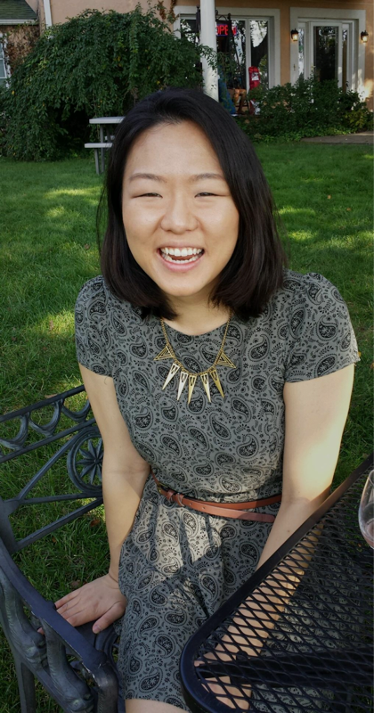

You can call me Sarah or Joo (jū).
TL;TR
Little Sarah loved books, movies, art, and cool tech.
As a kid my atypical, Asian mom pushed me towards books and movies as much as she pushed me to get good grades. I was so obsessed with Disney that I dressed up as Belle for Halloween until I could no longer fit into the yellow dress. I could relate to Belle’s thirst for adventure and exploring new places. When I wasn't reading a good book, I sketched Disney princesses and manga. My dad's passion for cool tech rubbed off on me, and we shared a love for phones and computers. But while he liked gadgets and drones, I liked Photoshop and cameras.
Grown-up Sarah cycled from design to medicine...
Although I was on track to become a graphic designer at first, the combination of my desire to help people and fascination with the human body won over. I abandoned the art studio and entered the lab to become a physician’s assistant early in my undergrad years. Along the way, someone dear to me became sick. I put my dreams of becoming a P.A. on hold to become a caretaker instead. I searched for games as a fun, affordable way to aid in recovery and mobility, but I failed to find anything that fit our needs. I often struggled to keep track of doctor's appointments and access health records from many places. I wished that the health care industry did more to prevent disease with a holistic mindset through education and treatment. I wanted to find solutions to all these troubles, but I didn't know how.
...to the world of debt collection back to design.
I worked at an accounts receivable management company in the debt collection industry. After trying out almost every department, I realized this company wasn't the right fit for me. However, I learned that I was happiest when I could solve problems and help my coworkers. I jumped at each opportunity to design fun event emails or banners to brighten everyone's day. I developed a craving to create delightful designs full time. After nearly a decade, I dove back into the design world and committed myself to an 8-month design program. Now as a designer, I dream to help the world to become better by working on meaningful projects together with a holistic approach.
What do I do in my spare time?
You can find me exploring new cafes and restaurants, reading novels or comics, listening to podcasts, traveling, stargazing and chasing after sunsets!